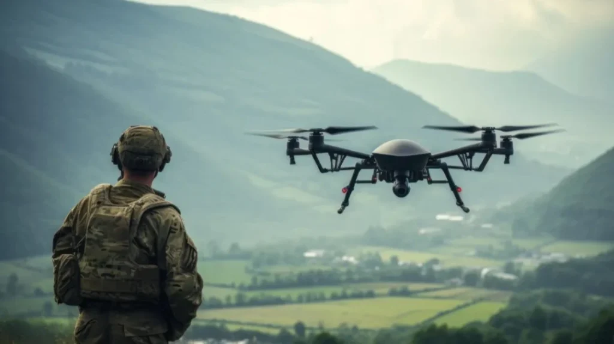

On the morning of February 24, 2026, Defense Secretary Pete Hegseth summoned Anthropic CEO Dario Amodei to the Pentagon and gave him until Friday to comply. The demand was simple: remove all restrictions on how the military could use Claude, the company's AI model, or face consequences. Those consequences included contract termination, designation as a national security supply-chain risk, and possible invocation of the Defense Production Act, a wartime authority last used to commandeer ventilator manufacturers during a pandemic. Amodei had three days.
He refused. The two restrictions Anthropic had placed on Claude, prohibiting mass domestic surveillance and fully autonomous weapons, had been agreed to by the Pentagon when the contract was signed seven months earlier. Now the government wanted them gone.
On February 27, Trump ordered every federal agency to immediately cease using Anthropic's technology. That same evening, OpenAI announced its own Pentagon deal. Anthropic sued. A California judge blocked the government's actions; a D.C. appeals panel declined to follow. Oral arguments are scheduled for May 19.
This was not an abstract dispute. AI was already reshaping warfare, compressing target-to-strike time from twelve hours to under a minute, collapsing campaign planning from weeks to hours. And once Claude was deployed inside the Pentagon's sealed classified networks, Anthropic's lawyers acknowledged in court, the company retained no technical ability to monitor or intervene. The red lines existed only on paper, and the government was demanding that paper be rewritten.
A private company had tried to set limits on how its technology could be used in war. A government had responded with the instruments of coercion. But the Anthropic case is only the most visible surface of a deeper problem: when algorithms enter the battlefield, responsibility dissolves across machines, companies, commanders, and states. The question is no longer just who sets the rules. It is whether any rules can still hold.
Associated Press
How AI Is Rewriting the Rules of War
At 1:15 a.m. on February 28, 2026, the first missiles crossed into Iranian airspace. By the end of that day, U.S. forces had struck more than 1,000 discrete targets across the Islamic Republic — an operational tempo that, in any previous conflict, would have taken days, possibly a week.
What made it possible was not a larger army. It was an AI system. The Maven Smart System processed satellite imagery, drone feeds, radar data, and signals intelligence in real time, then delivered prioritized target lists complete with GPS coordinates, weapons recommendations, and automated legal justifications for each strike. Decision-making that once took weeks had been compressed to seconds. The commander of U.S. Central Command, Admiral Brad Cooper, put it plainly: "These systems help us sift through vast amounts of data in seconds so our leaders can cut through the noise and make smarter decisions faster than the enemy can react."
The scale of the transformation becomes clearer in human terms. Tal Mimran, a former legal adviser in the Israel Defense Forces, described the old model: during his years in the IDF's targeting division between 2010 and 2015, a team of around twenty intelligence officers would work for approximately 250 days to compile between 200 and 250 targets. Today, he said, AI does that in a week.

A simulation of the Maven Smart System. (Bloomberg)
Gaza had already shown what this acceleration looks like from the inside. Beginning in October 2023, the Israeli military deployed an AI targeting system called Lavender, which assigned risk scores to virtually every adult male in the Strip. One intelligence officer described his role in the process:
"I would invest 20 seconds for each target at this stage, and do dozens of them every day. I had zero added value as a human, apart from being a stamp of approval."
Those twenty seconds were typically spent on a single verification: confirming that the target was male, on the assumption that women were not combatants. For civilian men incorrectly flagged by the system, there was no mechanism in place to catch the error. The military, according to the Lieber Institute at West Point, "essentially treated the outputs of the AI machine as if it were a human decision." Gaza established the template. Operation Epic Fury, with more than 1,000 strikes in its first twenty-four hours, inherited it.
The dangers of surrendering judgment to machines are not new. In 1983, Soviet officer Stanislav Petrov received a computer warning that the United States had launched nuclear missiles. He waited, and concluded it was a malfunction. He was right. In 2003, a Patriot missile battery in Iraq received an alert identifying a friendly aircraft as an incoming enemy missile. The operators had roughly sixty seconds. They trusted the screen. They fired. The pilot was killed. In each case, a machine was wrong, and the consequences depended entirely on whether a human being had the time and the standing to override it. Twenty seconds is enough time to confirm a gender and press a button. But it is not enough time to judge whether a person should die.
On November 20, 2023, in the southern Gaza Strip city of Rafah, Palestinians emerge from the rubble of homes destroyed by Israeli airstrikes. (Abed Rahim Khatib/Flash90)
Scale transforms error into inevitability.
Lavender operated with an accepted error rate of ten percent. The Israeli military knew this and proceeded. "Mistakes were treated statistically," one source told investigators. "Because of the scope and magnitude, the protocol was that even if you don't know for sure that the machine is right, you know that statistically it's fine." Applied across a list of 37,000 names, ten percent translates to approximately 3,700 people incorrectly marked for killing. In Gaza, that arithmetic was absorbed into the language of acceptable loss. In Iran, it produced a different kind of reckoning.
On the morning of February 28 — the first day of Operation Epic Fury — a U.S. cruise missile struck the Shajareh Tayyebeh girls' primary school in Minab, at approximately 10:00 a.m. local time, as children were arriving for class. 156 civilians were killed. 120 of them were schoolchildren. Preliminary assessments indicated that the targeting database had not been updated to reflect the building's conversion into a civilian school, and that no additional verification was conducted before the strike.
When reporters asked President Trump whether U.S. forces had struck the school, he denied it. "No," he said. "In my opinion, based on what I've seen, that was Iran."
The intelligence was classified. The accountability was not forthcoming.
More than 120 Democratic members of Congress wrote to Defense Secretary Hegseth demanding answers: was AI used to identify the school as a target, and if so, did a human verify it? Hegseth did not respond substantively. Days earlier, he had told reporters that Operation Epic Fury would have "no stupid rules of engagement."
The rules of armed conflict require that military forces distinguish between combatants and civilians, and take all feasible precautions to protect civilian life. Those rules were written for a world in which human beings made targeting decisions. They did not anticipate a world in which a database entry, unreviewed for more than a decade, could be processed by an algorithm, approved in seconds, and translated into a missile strike on a classroom full of girls.
Nobody has been held responsible for the school in Minab. The investigation remains open.
The aftermath of a strike on a school in Minab, Iran, on Feb. 28. (Reuters)
The Erosion of the Red Line
The school in Minab had no one to answer for it, but the absence of accountability did not begin on the battlefield. It runs through the policy documents of the companies that built the tools, and through the contracts that were supposed to govern how those tools could be used. The red lines did not disappear overnight. They were edited away, one policy update at a time, in language chosen to attract as little attention as possible.
On January 10, 2024, OpenAI quietly revised its usage policy. Until that day, the policy had explicitly prohibited "activity that has high risk of physical harm," listing "weapons development" and "military and warfare" among the banned uses. The blanket ban had vanished. OpenAI described the change as an effort to make its guidelines "clearer and more readable." The company did not dispute that it was now open to military applications and customers.
Thirteen months later, Google followed. The company removed its explicit pledge not to develop AI for weapons, removing the only written commitment its employees had ever successfully used to push back against military contracts. DeepMind CEO Demis Hassabis cited "a global competition taking place for AI leadership" as justification. In 2018, Google's employees had stopped a Pentagon contract by signing a petition, because the company could afford to walk away from a few million dollars. In 2026, the classified AI market is worth tens of billions of dollars, and the Pentagon has shown it will retaliate against companies that refuse to cooperate. Employee petitions did not stop anything this time.
On March 6, 2026, a demonstration was held in front of the U.S. Capitol in Washington, D.C., to protest OpenAI's application to the Pentagon. (Reuters)
Anthropic was not immune. Three days before the Pentagon's deadline, the company published version 3.0 of its Responsible Scaling Policy. The original 2023 commitment had been unusually concrete: Anthropic would not train more capable models unless it could demonstrate adequate safety measures in advance. That commitment is now gone. What replaced it carried an explicit rationale: "If one AI developer paused while others moved forward without strong mitigations, that could result in a world that is less safe." This was the exact argument Anthropic's original policy had been designed to reject.
Anthropic had loosened its safety promises everywhere except the one place the Pentagon was directly asking it to. Authorizing autonomous lethal strikes and mass civilian surveillance was not an abstract concession — it was the scenario the company's founders had left OpenAI to prevent. To retreat here, they concluded, was to make everything else irrelevant. That conclusion is what the lawsuit is actually about.
Reuters
Once Claude was deployed inside the Pentagon's sealed classified networks, Anthropic's own lawyers acknowledged in court, the company retained no technical ability to monitor or intervene. Whatever limits existed lived entirely in the contract language — and the government was demanding that language be removed.
The red lines existed only on paper. And the government was demanding that paper be rewritten.
On the evening of February 27, hours after the Pentagon announced it was blacklisting Anthropic, OpenAI announced its own agreement with the Department of Defense. More than 800 OpenAI employees signed an open letter condemning the decision. On March 17, Microsoft, Google, Amazon, Apple, and OpenAI filed a joint amicus brief supporting Anthropic's lawsuit: companies that had spent two years quietly removing their own ethical restrictions, now appearing in court to argue that ethical restrictions should exist.
A California judge issued a preliminary injunction on March 26, finding the government's conduct likely unconstitutional. A D.C. appeals panel declined to follow. Oral arguments are scheduled for May 19.
Defense Secretary Pete Hegseth at Cabinet meeting. (Image credit: Will Oliver / EPA / Bloomberg via Getty Images)
The courts may yet rule in Anthropic's favor. A contract clause, reinstated by judicial order, is still just a contract clause — unenforceable once a model disappears behind classification walls the company cannot access, irrelevant to a targeting database last reviewed in 2013, and silent on the question of how much time a human analyst gets to decide whether someone should die.
The Pentagon's fiscal 2027 budget request asks for $54.6 billion for the Defense Autonomous Warfare Group, a 24,000 percent increase over the prior year. The money is already moving and the systems are already deployed. The gap between what the law can do and what the technology is doing grows wider by the day.
Reuters
The State Does Not Wait
Even as Anthropic's legal battle with the Pentagon drags on, the American state apparatus has already charged ahead along the path of AI militarization — without pause, without hesitation. That contradiction, in itself, may be the most revealing window into the crisis at hand.
On April 17, 2026, the Department of the Air Force released its Strategy for Data and Artificial Intelligence, sending an unambiguous signal: artificial intelligence is no longer a potential technology for some future conflict — it is the foundation upon which current combat capability rests. Secretary of the Air Force Troy Meink wrote in the document's foreword:
"This strategy is fundamentally about securing AI dominance in the air and space domains. By becoming an AI-first force, we will empower our warfighters to out-think, out-maneuver, and out-pace any adversary."
Department of the Air Force
This forceful document marked a fundamental shift in the status of AI within the U.S. military: no longer a supplementary tool, but the core pillar of strategic advantage.
The Pentagon has been translating this strategy into reality at a remarkable pace. Within five months of the GenAI.mil platform going live, more than 1.3 million military personnel had used it, deploying hundreds of thousands of AI agents. In May 2026, the Department of Defense went further, partnering with seven tech giants — SpaceX, OpenAI, Google, Nvidia, Microsoft, Amazon Web Services, and Reflection — to connect AI systems directly to the highest-classified networks for use in operational decision-making.
This acceleration is most visible at the technological frontier. In May 2026, Air Force Lieutenant General Christopher Niemi testified before a Senate subcommittee that autonomous combat aircraft would eventually surpass human-piloted fighters in every dimension. "There will come a point where a robot fighter is better than a manned fighter," he said, warning that failure to prepare now would be "a tragic shame." This is no longer science fiction — it is the sober assessment of senior military officers speaking on the congressional record.
Even as the United States aggressively pursues AI militarization, the Pentagon continues to invoke a set of ethical principles, pledging to employ artificial intelligence in ways that are "responsible, equitable, traceable, reliable, and governable." Aggressive strategic expansion and gentle ethical reassurances appear side by side in official documents.
But none of these ethical commitments carry any binding force. Emil Michael, the Pentagon's chief AI officer, stated publicly that the Department's own security and ethical standards must take precedence over any corporate safeguards. He described as "extremely dangerous" a hypothetical scenario in which a U.S. military AI agent, mid-operation, stopped functioning because of a company-imposed guardrail. "That's a risk I cannot take," he said. When corporate ethics collide with national interest, national interest wins — and the guardrails come off.
Usanas Foundation
The Anthropic case made that hierarchy visible: when negotiation failed, the government reached for executive orders and supply-chain designations, reframing a company's ethical position as a national security threat. Within hours of sanctioning Anthropic, the Pentagon signed agreements with OpenAI and six other companies, securing the unrestricted access it had been unable to extract through negotiation. Critics argue that the episode exposed a gap between public ethical commitments and operational priorities.
The gap between what the ethical principles say and what the budget funds is, at this point, measurable in dollars. The same calculus applies beyond America's borders: in the face of strategic competition, governance lags behind deployment, and the rule-makers are still arguing about definitions while the systems are already in the field.
The Rules Were Written for a Different War
In 1949, in the aftermath of two world wars, the international community forged the Geneva Conventions. Three principles lie at their core: the distinction principle, requiring combatants to clearly differentiate between fighters and civilians; the proportionality principle, requiring that civilian harm caused by military strikes not be excessive in relation to military advantage; and the precautionary principle, requiring all feasible measures to minimize incidental damage.
Yet the architects of these principles never contemplated a world in which algorithms make targeting decisions. The Lavender system in Gaza had already shown what that gap looks like in practice. When bombs fall on algorithmic instruction, a machine cannot genuinely distinguish a hospital orderly from an armed fighter; it can only read data labels. International law demands that commanders weigh civilian casualties against military value on a case-by-case basis — but when target packages are generated by AI in seconds, when operators face dozens of 20-second confirmation prompts per day, that weighing has no space to occur. Israeli military officials acknowledged openly that collateral damage was not assessed in many targeted strikes. The Geneva Conventions assume a human being with time, information, and authority to make a judgment. The Lavender system left room for none of those things.
The international community has not been entirely inert. As early as 2014, discussions on lethal autonomous weapons systems (LAWS) were launched under the framework of the Convention on Certain Conventional Weapons (CCW), with a Group of Governmental Experts (GGE) convening twice a year in Geneva.
Irish Ambassador Noel White at a GGE side-event discussion on Lethal Autonomous Weapons Systems, UN Geneva, May 18, 2023. (@IEAmbUNGeneva / X)
More than a decade later, the process has yielded almost nothing of substance. The fundamental obstacle is the consensus decision-making rule: under the CCW, all resolutions require the agreement of every state party, meaning a single objection is sufficient to kill any proposal. A small number of heavily militarized states — including the United States, Russia, Israel, India, Australia, and South Korea — have persistently blocked the path toward a legally binding treaty.
In November 2025, the UN General Assembly's First Committee finally broke from the Geneva pattern, passing a resolution by 156 votes calling for a legally binding LAWS agreement to be negotiated before the Seventh Review Conference in 2026.
Yet 156 votes remain powerless under CCW rules. The existing GGE mandate runs through the end of 2026, and the Review Conference will be the decisive moment: either states agree to negotiate a new protocol, or the window closes for good. Most arms control specialists are pessimistic — even if negotiations begin, a treaty is unlikely before 2027 at the earliest, by which point autonomous weapons technology may have already proliferated beyond any realistic prospect of control.
The world is currently in what experts call the "pre-proliferation window" — the last interval in which meaningful regulation may still be possible before such weapons spread as widely as small arms. That window is closing in plain sight. The democratization of drone technology has already driven the threshold for acquiring autonomous weapons to historically low levels: in 2010, just 10 non-state armed groups possessed armed drones; by 2025, 469 groups across 17 countries had deployed drones in attacks, 58 of them for the first time that year.

The states most capable of shaping a binding agreement are the same states most invested in preserving their freedom to act without one. In November 2024, Russia forced the CCW annual meeting into informal mode by threatening to block civil society participation entirely. The United States and India have repeatedly exploited the consensus rule to block formal treaty negotiations. The 2026 Review Conference will be the last realistic opportunity to change that. Most arms control specialists do not expect it to.
Who Bears Responsibility?
As the Seventh Review Conference of the Convention on Certain Conventional Weapons draws near, the entire arc of this story converges on a single fundamental question: when algorithms make lethal decisions — when they, in effect, pull the trigger — where does human responsibility reside?
Anthropic's decision to fight through the courts is at once an act of principle and an admission of limited options. From the company's vantage point, once commercial negotiation collapsed, the judiciary was the only remaining mechanism capable of checking governmental pressure. Even so, a judicial victory would offer only limited remedy. Courts can strike down a specific executive order; they cannot reverse the underlying momentum of AI militarization, nor can they fill the structural gap between algorithmic decision-making and legal accountability.
Some members of Congress have sought to enshrine Anthropic's ethical red lines in statute, establishing hard legal limits on AI military applications. The instinct is sound — only when ethical principles carry the force of law do they become genuine constraints rather than voluntary declarations.
In the current political environment, however, such legislation faces almost insurmountable obstacles. The partisan polarization of national security debates, combined with the entrenched influence of the defense industry in Congress, makes any meaningful restriction on military AI use extraordinarily difficult to advance. And even if legislation were passed, a deeper problem would remain: law cannot keep pace with technology. How do we define "autonomous lethal weapons"? What constitutes "meaningful human control"? These core questions have no agreed-upon answers anywhere in the world.
The gap between technological change and governance capacity is not new — a decade of UN talks has failed to produce even a shared definition of autonomous weapons. When technology and governance run on different clocks, all rules are structurally destined to lag behind reality.
But the deeper problem is not speed. It is power. The states and corporations that drive AI militarization and profit from it are precisely the actors with the greatest capacity to prevent binding rules from ever taking effect. Anthropic's resistance is an exception; and that exception has cost the company enormous contracts. The signal sent to every other company in the industry is unmistakable: hold the ethical line, and pay a heavy price.
We return, finally, to where we began: when an algorithm makes a lethal decision, who is responsible?
The engineers who built it will say they only made a tool. The tech companies will say they installed safeguards. The military commanders will say they merely confirmed a technical recommendation. The government will say it was simply protecting national security. Every link in the chain of responsibility can find a reason to pass the burden to the next. And so 37,000 people are placed on a targeting list; a 10% error rate is absorbed as acceptable loss; innocent lives are extinguished within the margin of algorithmic error — and not a single concrete person is required to answer for it.
This is the deepest danger of AI warfare: not a deficit of capability, but the deliberate dissolution of accountability; not an absence of rules, but the systematic circumvention of them. We are entering an era in which technology determines who lives and who dies — and no one need answer for the outcome. The lives that vanished in the error bands of an algorithm, the tragedies that left no record anywhere — they are the most damning and most silent indictment of the age we are building.